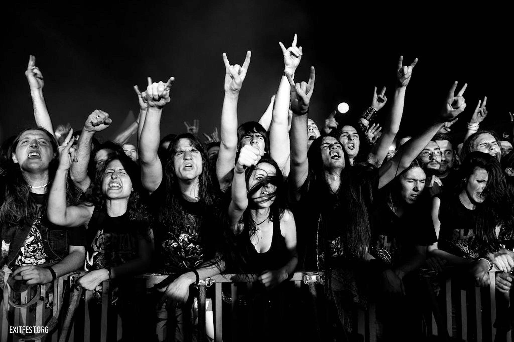

Subculture
Clothing
Clothing, while having a common theme, can be quite diverse between the different metal subgenres. Metal fashion has it's roots in Biker and Rocker subcultures.
Metal Fashion commonly includes leatherleather jackets; combat boots, studded belts, hi-top basketball shoes, bullet belts, blue or black jeans, skate shoes, camouflage pants and shorts, and denim jackets, often adorned with badges, pins and patches, known as "battle jackets".
Long hair or completely bald are the two most common hairstyles within metal, however as of recent years, more and more artists donning short hair have been seen.
Certain subgenres have their own twist though, Nu Metal incorporates elements of Hip Hop fashion such as baggy pants and spiked hair. Corpse paint is commonly worn by Black Metal artists. Power Metal bands often wear attire reminiscent of the middle ages, due to their lyrical themes. Many stoner metal bands wear clothing similar to that worn by Psychadelic bands in the 1960s and 1970s.
Heavy Metal attire is thought to have been pioneered by Rob Halford of Judas Priest, who was involved in the Leather subculture and Motorhead who introduced punk fashion into the fold.
Gestures and Dancing
Popularised by Ronnie James Dio, of several bands, the "devil horns" have become ubiqitous among metalheads of all scenes and subgenres. The middle finger is also not an uncommong sight at a metal show.
Headbanging, Poggoing and Moshing are the most common forms of dancing within the Metal subgenre.

Substance Use
Metal has been associated with Alcohol and Recreational drug use since it's inception, similar to other genres, it just comes with the rebellious image.
Too many metal songs have been written about drugs and alcohol for me to count, but some notable ones include "Sweet Leaf" by Black Sabbath and "Vodka" by Korpikillani, however, not all Metal songs about Drugs and Alcohol celebrate them, "Master of Puppets", by Metallica, talks about the demons of drug and alcohol abuse.
Authenticity
Similar to the Punk Subculture, Authenticity is one of Metal's core values. A heavy disdain towards "Posers" (People who pretend they are something they aren't) is ubiquitous within the scene. "Sell Out" is also a common term used to describe bands who betray their audience and start creating radio friendly music that panders to a wider audience.
Below is a documentary on Heavy Metal Culture.